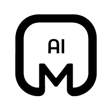

Esperienze professionali
Dove ho applicato quello che ho studiato.
Azimut Yachts
Attività nell'ufficio di Miglioramento Continuo, focalizzata sul monitoraggio del ciclo produttivo tramite sistema MES. Analisi dei dati di campo per il calcolo dei KPI di produzione, l'identificazione delle inefficienze e l'ottimizzazione dei processi.
MESKPI di produzioneLean

Minerva Education AI
Sviluppo di un'applicazione EdTech basata su intelligenza artificiale. Progettazione e implementazione di un algoritmo basato su Large Language Models per la generazione automatizzata e personalizzata di presentazioni didattiche.
LLMPythonEdTech